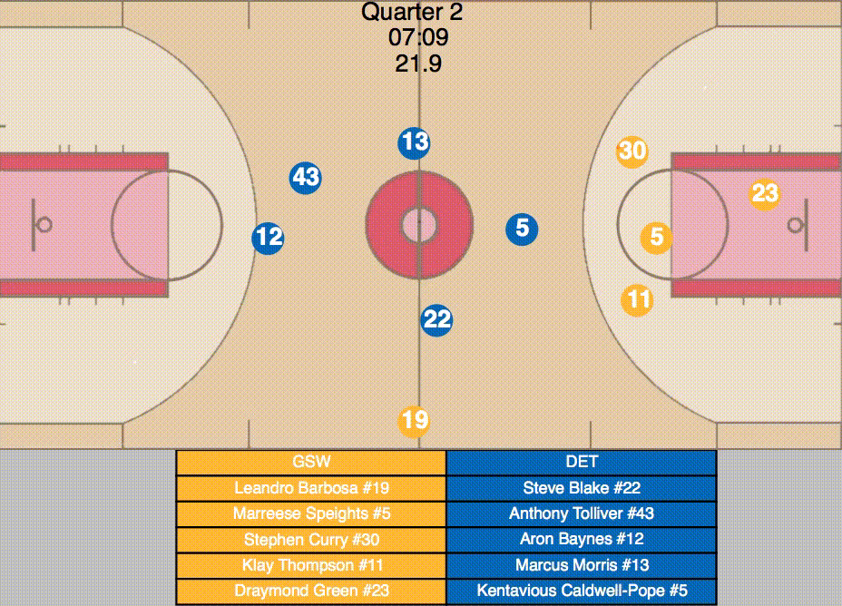

NBA Spark: Movement Data Analytics Using Apache Spark
This project leverages Apache Spark to process and analyze NBA player movement and play-by-play data across 84 games from the 2015/16 season. All large-scale computations were executed on a Hadoop cluster to take full advantage of distributed data processing capabilities. The analysis aims to extract insights on player behavior, speed, rebounds, and distance traveled using SparkSQL and scalable computing principles.

Player Distance Traveled
We computed the total and normalized distance covered by each player using Euclidean metrics across all recorded moments. Normalization accounts for the actual minutes played to get a fair average per quarter.
Speed Zones Analysis
Player speeds were classified into three zones (slow, normal, fast). A moving average filter (window size: 10) was applied to smoothen the speed data and exclude unrealistic outliers. Transitions between zones and quarter breaks defined run boundaries.
Highlights:
- Fast run median distance: 10m
- Top fast-distance player: ID 202691, 393.15 meters
- 235 players never reached fast zone (213 never played)
Rebound Metrics
The system also computed offensive/defensive rebound counts and identified the farthest rebound for each player using synchronized play-by-play and positional data.

Top 10 Farthest Rebounds
| Rank | Player ID | Distance (m) |
|---|---|---|
| 1 | 200765 | 14.29 |
| 2 | 2571 | 13.77 |
| 3 | 203110 | 13.68 |
| 4 | 201939 | 13.65 |
| 5 | 203546 | 13.62 |
| 6 | 1626169 | 13.57 |
| 7 | 2590 | 13.44 |
| 8 | 2544 | 13.39 |
| 9 | 201567 | 13.39 |
| 10 | 202681 | 13.38 |
The full performance breakdown and report are available on GitHub.